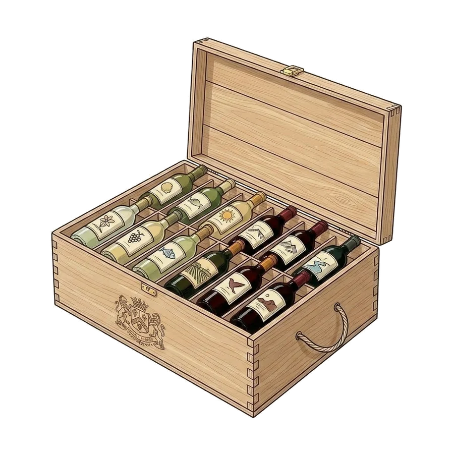

Pour les assureurs et courtiers
Pour vos clients propriétaires de cave, un expert indépendant qui sécurise vos contrats
De nombreuses caves de vos clients sont sous-assurées sans qu'ils le sachent : la valeur déclarée repose souvent sur le prix d'achat et n'a jamais été réévaluée, alors que la cote des grands crus, elle, évolue. Je réalise pour vos assurés des audits d'estimation de cave structurés, indépendants et défendables en cas de contestation, livrés sous 5 jours ouvrés au tarif unique de 199 €.

- 199 €, tarif uniquePar cave, quel que soit le nombre de bouteilles. Aucune commission.
- 5 jours ouvrésRapport PDF livré à votre assuré, transmissible à vos équipes.
- 100 % à distanceCouverture nationale, sans déplacement ni frais annexes.
- Valeur de remplacementAssiette par défaut pour le capital assuré, sur demande la valeur de marché.
Le constat
Trois douleurs structurelles dans la gestion des polices « cave à vin »
La cote des grands crus évolue avec le temps. Vos clients ne réévaluent jamais leur cave. Et un expert habitation généraliste ne dispose pas, par construction, de la compétence pour évaluer un Pétrus. Voilà ce que cela produit concrètement.
I
Le frein à la souscription
Pour les contrats au-delà de 10 000 €, vos partenaires experts actuels, commissaires-priseurs principalement, facturent 500 à 1 200 € avec déplacement physique obligatoire. Pour les caves de 10 000 à 50 000 €, ce coût est dissuasif pour vos clients. Résultat : vous perdez la souscription, ou vous souscrivez sans documenter la valeur, en accumulant un risque non quantifié.
II
La règle proportionnelle, bombe à retardement
Article L121-5 du Code des assurances : si la valeur réelle dépasse la somme garantie, l'indemnisation est réduite au prorata. Une cave réellement à 100 000 € mais assurée 60 000 € sera indemnisée à 60 % du préjudice. Vous appliquez la loi, vous perdez un client, vous récoltez une médiation et un avis Trustpilot à une étoile.
III
Le devoir de conseil DDA, exposé
La Directive sur la Distribution d'Assurances impose un conseil adapté. Recommander un contrat « cave à vin » sans vérifier la valeur réelle expose le réseau à une mise en cause. Un rapport d'expertise indépendant documente le conseil et transfère la responsabilité de l'évaluation à un tiers expert.

L'expertise qui sous-tend chaque rapport
Six ans de ventes aux enchères, aucun conflit d'intérêt.
Je m'appelle Fanny Lonqueu-Brochard. Pendant 6 ans, j'ai été responsable des ventes aux enchères. J'ai estimé plusieurs milliers de caves dans tous les contextes patrimoniaux : successions, divorces, liquidations, ventes volontaires. WSET niveau 3 avec distinction (2024).
Depuis estimationcave.com, je propose la même méthodologie d'expertise, indépendante et structurée, à une échelle plus accessible, en 100 % distanciel. Aucun rachat, aucune mise en vente, aucun conflit d'intérêt.
Fanny
Experte indépendante en estimation de cave · WSET 3 · mon parcours
Pour une cession
Valeur de marché secondaireCroisement des résultats d'enchères majeures et des offres marchandes. Sert de référence patrimoniale et de support à la décision de cession.Pour l'assurance
Valeur de remplacementPrix actuel sur le marché de la fine wine, hors enchères et hors commissions. Sert d'assiette à la déclaration d'assurance et à l'indemnisation post-sinistre.Ce que j'apporte
Trois cas d'usage où je fais gagner du temps à vos équipes
I
À la souscription : pour les caves de 10 à 50 K€
Le segment où l'expertise commissaire-priseur n'est pas rentable pour vos clients. Mon rapport à 199 € rend la friction tarifaire acceptable et débloque vos souscriptions sur ce segment aujourd'hui mal couvert. Délai 5 jours ouvrés, 100 % distanciel, couverture nationale sans frais cachés.
Livrable PDF d'audit complet (20 à 40 pages) : inventaire valorisé bouteille par bouteille, fourchette d'estimation ±15 %, identification des concentrations de risque, top valeurs.
II
Sur votre portefeuille existant : la réévaluation périodique
Les contrats « cave » souscrits il y a 3 à 5 ans et jamais réévalués sont les plus exposés à la règle proportionnelle. Je réalise des audits actualisés qui détectent la sous-assurance avant le sinistre. Activable en recommandation individuelle au fil de l'eau, ou en campagne dédiée sur un segment de portefeuille ciblé.
Livrable Même rapport qu'en souscription, avec un volet « évolution depuis dernière déclaration » si vous me transmettez l'historique.
III
Quand le sinistre est déclaré : l'expertise post-sinistre
Votre expert habitation n'a pas la compétence vin pour évaluer les pertes : risque systématique de sous-évaluation, d'expertise contradictoire, et de litige. J'interviens en expertise spécialisée pour fournir une évaluation argumentée et limiter le coût de gestion sinistre.
J'interviens sur les quatre sinistres-types qui touchent les caves : effraction et vol, dégât des eaux, dégradation thermique (panne climatisation, choc thermique de stockage), bris de bouteilles. Chaque type appelle une méthodologie d'évaluation différente : perte totale au prix de remplacement, perte de millésime spécifique, ou perte de potentiel de garde pour les vins encore en évolution.
Livrable Rapport d'expertise sinistre formaté pour le dossier d'indemnisation. Tarif sur devis selon volume.
La méthodologie
Quatre étapes, sans déplacement.
Une question légitime quand on découvre un service distanciel à 199 € livré en 5 jours : comment garantir une évaluation sérieuse sans déplacement physique ? Voici comment.
Étape une
Inventaire photographique structuré
Le propriétaire transmet des photos calibrées selon un protocole défini : étiquette, contre-étiquette, niveau d'épaule, capsule, conditions de stockage. L'identification d'un vin se fait à 99 % par l'étiquette et l'état apparent, pas par dégustation. Le déplacement physique n'apporte une information décisive que dans des cas très particuliers (vérification de bouchage exceptionnel, doute sur l'authenticité d'une bouteille rare).
Étape deux
Identification et croisement multi-sources
Pour chaque référence : appellation, domaine, millésime, format, niveau, état apparent. Recoupement systématique sur deux familles de sources : les résultats des grandes maisons de ventes aux enchères (Sotheby's, Christie's, Baghera/wines, Acker, Hart Davis Hart, Zachys) et les offres marchandes pour le marché de remplacement.
Étape trois
Valorisation pondérée
Application d'une grille de coefficients prenant en compte le millésime, l'état de la bouteille, la rotation marché, la liquidité de la référence et le contexte de cession envisagé. Distinction systématique valeur de marché secondaire / valeur de remplacement selon l'usage du rapport.
Étape quatre
Rapport structuré et livrable
Document PDF de 20 à 40 pages comprenant : inventaire valorisé bouteille par bouteille, fourchette d'estimation ±15 %, identification des concentrations de risque, top valeurs, contexte marché par région. Format pensé pour transmission au service de souscription ou d'indemnisation.
Pourquoi recommander mon service
Face aux options existantes
| Commissaire-priseur | Sommelier / caviste | Maison de ventes | estimationcave.com | |
|---|---|---|---|---|
| Tarif | 500 à 1 200 € + déplacement | 300 à 800 € + déplacement | « Gratuit » si mise en vente | 199 € |
| Délai | 3 à 6 semaines | Variable | Variable | 5 jours ouvrés |
| Indépendance | Conflit : vend aux enchères | Conflit : rachat possible | Conflit : cherche la mise en vente | Aucun conflit |
| 100 % distanciel | Non | Non | Partiel | Oui |
| Rapport structuré argumenté | Variable | Rarement | Orienté vente | Oui, PDF 15 à 50 pages |
| Couverture nationale | Limitée | Limitée | Concentrée Paris | Totale |
Je n'ai aucun intérêt à minorer une cave pour la racheter, ni à orienter une recommandation vers une mise en vente. Pour vous comme pour vos clients, c'est la garantie d'une évaluation neutre, documentée et défendable en cas de contestation.

À quoi ressemble un rapport
Lisez un audit complet, anonymisé.
Le meilleur moyen d'évaluer si je peux être utile à vos clients : lire un rapport complet. Voici un exemple anonymisé d'un audit récent à usage assurantiel : cave de 51 bouteilles structurée autour de la Bourgogne (49 %), valeur de marché 1 882 €, valeur de remplacement 2 229 € (assiette recommandée pour le capital assuré), avec recommandations de souscription et points de vigilance pour le contrat.
Télécharger le rapport exemple (PDF, 2,4 Mo)Travailler ensemble
Trois niveaux d'engagement, à vous de choisir
Je travaille avec des assureurs et courtiers selon trois modalités, du plus simple au plus engageant. Vous restez maître du périmètre.
Le plus simple, sans engagement
Référencement passif
Vous me mentionnez dans votre onboarding client, votre extranet ou vos communications comme « expert recommandé pour l'estimation de cave à vins ». Aucun engagement, aucune commission. Vos clients me trouvent quand ils en ont besoin, je leur livre un rapport qu'ils transmettent à votre équipe.
Avec code de réduction pour vos clients
Recommandation active
Vous me recommandez nominativement avec un code de réduction. Je trace les conversions venant de votre réseau, vous pouvez mesurer votre apport, et nous formalisons éventuellement un partenariat structuré.
Pour les expertises sinistre et réévaluations
Mandat direct
Vous me mandatez directement sur des dossiers spécifiques : expertise post-sinistre, réévaluation périodique d'un portefeuille, audit pour souscription d'un contrat haut de gamme. Tarif sur devis selon volume et complexité.
Parlons-en
Un cas concret, un portefeuille, un sinistre ?
Si l'un des trois scénarios résonne avec votre structure, ou si vous voulez simplement explorer la pertinence d'un partenariat, écrivez-moi. Je réponds sous 24 à 48 heures ouvrées.
contact@estimationcave.comMentionnez votre structure (assureur, courtier, agent général), votre périmètre d'intervention et le scénario qui vous intéresse : cela me permettra de vous répondre de manière ciblée.